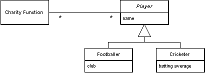

| Home | Articles | Talks | Links | Contact Me | ISA | ThoughtWorks |
Represent an inheritance hierarchy of classes with one table per concrete class in the hierarchy.

Concrete Table Inheritance uses one database table for each concrete class in the hierarchy. Each table contains columns for the concrete class and all its ancestors. As a result any fields in a superclass are duplicated across the tables of the subclasses.
As with all of these inheritance schemes the basic behavior uses Inheritance Mappers.
You need to pay attention to the keys with this scheme. Punningingly the key thing to do is to ensure that keys are not just unique to a table, but also unique to all the tables in a hierarchy. The classic case of where you need this is if you have a collection of players and you are using Identity Field. If keys can be duplicated between concrete tables you'll get multiple rows for a particular key value. You thus need a key allocation system that keeps track of key usage across the tables, it also means you can't rely on the database's primary key uniqueness mechanism.
This becomes particularly awkward if you are hooking up to databases that are used by other systems. In many of these cases you can't guarantee key uniqueness across tables. In this situation you either have to avoid using superclass fields or do a compound key that involves a table identifier.
An example of avoiding superclass fields is to use separate footballer, cricketer, and bowler collections as fields instead of a player collection. You can still have a player collection in an interface, but you have to concatenate the fields together to do this.
For compound keys you need a special key object to use as your id field for Identity Field. This key would use both the primary key of the table and the table name to determine uniqueness.
Related to this is problems with using referential integrity in the database. Consider an object model like Figure 1. To implement this in the database you need a link table that contains foreign key columns for the charity function and the player. The problem is that there's no table for the player. As a result you can't put together a referential integrity constraint for the foreign key field that takes either footballers or cricketers. You either have to ignore the referential integrity, or use multiple link tables, one for each of the actual tables in the database. On top of this there's also problems if you can't guarantee key uniqueness.
Figure 1:
If you are searching for players with a select statement, you need to look at all concrete tables to see which ones contains the appropriate value. This leads to multiple queries to pull back a single row of data. While this is easy to program, it can hurt performance. You don't suffer the performance hit when you know the class you need, but you do have to prefer to use the concrete class to improve performance.
The pattern is often referred to as something along the lines of leaf table inheritance. Some people prefer a variation where you have one table per leaf class, instead of one table per concrete class. If you don't have any concrete superclasses in the hierarchy this ends up as the same thing. Even if you do have concrete superclasses the difference is pretty minor.
When figuring out how to map inheritance, Concrete Table Inheritance, Class Table Inheritance and Single Table Inheritance are the alternatives.
The strengths of Concrete Table Inheritance are:
The weaknesses of Concrete Table Inheritance are
Remember that the trio of inheritance patterns can coexist in a single hierarchy. So you might use Concrete Table Inheritance for one or two subclasses and Single Table Inheritance for the rest.
Here I'll show and implementation for the sketch. As with all the inheritance examples in this chapter, I'm using the basic design of classes from Inheritance Mappers. Figure 2 shows the basic design.

Figure 2: The generic class diagram of Inheritance Mappers
Each mapper is linked to the database table that is the source of the data. In ADO.NET a data set holds the data table.
class Mapper...
public Gateway Gateway;
private IDictionary identityMap = new Hashtable();
public Mapper (Gateway gateway) {
this.Gateway = gateway;
}
private DataTable table {
get {return Gateway.Data.Tables[TableName];}
}
abstract public String TableName {get;}
The gateway class holds onto the data set with in its data property. The data can be loaded up by supplying suitable queries.
class Gateway... public DataSet Data = new DataSet();
Each concrete mapper needs to define what is the name of the table that holds its data.
class CricketerMapper...
public override String TableName {
get {return "Cricketers";}
}
The player mapper has fields for each concrete mapper.
class PlayerMapper...
private BowlerMapper bmapper;
private CricketerMapper cmapper;
private FootballerMapper fmapper;
public PlayerMapper (Gateway gateway) : base (gateway) {
bmapper = new BowlerMapper(Gateway);
cmapper = new CricketerMapper(Gateway);
fmapper = new FootballerMapper(Gateway);
}
Each concrete mapper class has a find method that returns an object given a key value.
class CricketerMapper...
public Cricketer Find(long id) {
return (Cricketer) AbstractFind(id);
}
The abstract behavior on the superclass finds the right database row for the id, creates a new domain object of the correct type, and uses the load method to load it up (I'll describe the load in a moment.)
class Mapper...
public DomainObject AbstractFind(long id) {
DataRow row = FindRow(id);
if (row == null) return null;
else {
DomainObject result = CreateDomainObject();
Load(result, row);
return result;
}
}
private DataRow FindRow(long id) {
String filter = String.Format("id = {0}", id);
DataRow[] results = table.Select(filter);
if (results.Length == 0) return null;
else return results[0];
}
protected abstract DomainObject CreateDomainObject();
class CricketerMapper...
protected override DomainObject CreateDomainObject(){
return new Cricketer();
}
The actual loading of data from the database is done by the load method, or rather by several load methods - one for the mapper class and all its superclasses.
class CricketerMapper...
protected override void Load(DomainObject obj, DataRow row) {
base.Load(obj,row);
Cricketer cricketer = (Cricketer) obj;
cricketer.battingAverage = (double)row["battingAverage"];
}
class AbstractPlayerMapper...
protected override void Load(DomainObject obj, DataRow row) {
base.Load(obj, row);
Player player = (Player) obj;
player.name = (String)row["name"];
class Mapper...
protected virtual void Load(DomainObject obj, DataRow row) {
obj.Id = (int) row ["id"];
}
This logic is the logic for finding an object using a mapper for a concrete class. You can also use a mapper for the superclass: the player mapper. It needs to find an object from whichever table it is living in. Since all the data is already in memory in the data set, I can do it like this.
class PlayerMapper...
public Player Find (long key) {
Player result;
result = fmapper.Find(key);
if (result != null) return result;
result = bmapper.Find(key);
if (result != null) return result;
result = cmapper.Find(key);
if (result != null) return result;
return null;
}
Remember this is reasonable only because the data is already in memory. If you need to go to the database three times (or more for more subclasses) this will be slow. One way that may help is to do a join across all the concrete tables. This allows you to access the data in one database call. However large joins are often slow in their own right, you'll need to do some benchmarks with your own application to find out what works and what doesn't. Also this will be an outer join, and as well as slow the syntax for this is non-portable and often cryptic.
The update method can be defined on the mapper superclass.
class Mapper...
public virtual void Update (DomainObject arg) {
Save (arg, FindRow(arg.Id));
}
Similar to loading, we use a sequence of save methods for each mapper class.
class CricketerMapper...
protected override void Save(DomainObject obj, DataRow row) {
base.Save(obj, row);
Cricketer cricketer = (Cricketer) obj;
row["battingAverage"] = cricketer.battingAverage;
}
class AbstractPlayerMapper...
protected override void Save(DomainObject obj, DataRow row) {
Player player = (Player) obj;
row["name"] = player.name;
}
The player mapper needs to find the correct concrete mapper to use and then delegate the update call.
class PlayerMapper...
public override void Update (DomainObject obj) {
MapperFor(obj).Update(obj);
}
private Mapper MapperFor(DomainObject obj) {
if (obj is Footballer)
return fmapper;
if (obj is Bowler)
return bmapper;
if (obj is Cricketer)
return cmapper;
throw new Exception("No mapper available");
}
Insertion is a variation on updating, the extra behavior is creating the new row - this can be done on the superclass.
class Mapper...
public virtual long Insert (DomainObject arg) {
DataRow row = table.NewRow();
arg.Id = GetNextID();
row["id"] = arg.Id;
Save (arg, row);
table.Rows.Add(row);
return arg.Id;
}
Again the player class delegates to the appropriate mapper
class PlayerMapper...
public override long Insert (DomainObject obj) {
return MapperFor(obj).Insert(obj);
}
Deletion is very straightforward. Again we have a method defined on the superclass
class Mapper...
public virtual void Delete(DomainObject obj) {
DataRow row = FindRow(obj.Id);
row.Delete();
}
And a delegating method on the player mapper.
class PlayerMapper...
public override void Delete (DomainObject obj) {
MapperFor(obj).Delete(obj);
}
 |  |
{kind=link}
{kind=link}